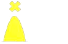

| 281. Виждате следния сферичен знак. Какво означава?: |
|
Специален знак Знак за отделни опасности Знак за безопасни води Кардинален знак |
| документ регламентиращ правилния отговор: IALA Maritime Buoyage System NP 735 Diagram 8 |
| 282. Виждате следния коничен знак. Какво означава?:  |
|
Кардинален знак Специален знак Знак за безопасни води Знак за отделни опасности |
| документ регламентиращ правилния отговор: IALA Maritime Buoyage System NP 735 Diagram 8 |
| 283. Виждате буй с вертикални сини и жълти полоси. Какво означава?: |
|
Буй за нова опасност Специален знак Знак за безопасни води Знак за отделни опасности |
| документ регламентиращ правилния отговор: IALA Maritime Buoyage System NP 735 Diagram 8 |
| 284. Виждате веха с вертикални сини и жълти полоси. Какво означава?: |
|
Веха обозначаваща нова опасност Специален знак Знак за безопасни води Знак за отделни опасности |
| документ регламентиращ правилния отговор: IALA Maritime Buoyage System NP 735 Diagram 8 |